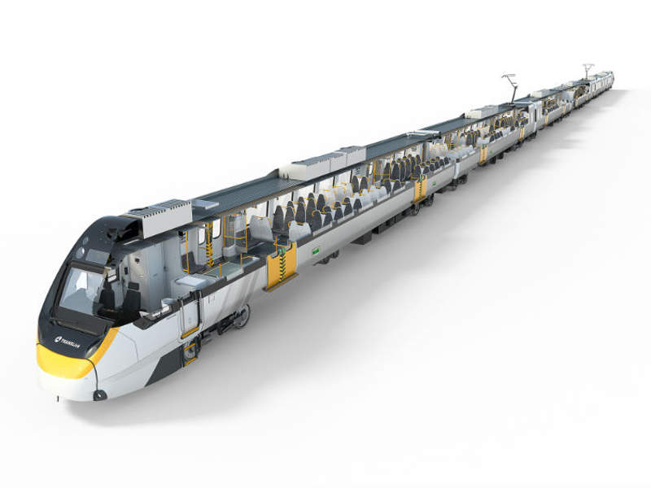

NGR (New Generation Rollingstock)¶
This page is under construction!! Check out NGR on Wikipedia.
The NGR as seen on QR's Carriage Layouts page
Apparently the pantographs last half as long as the other trains, and they have more flange squeal.
The NGR trains were designed and built so that ETCS equipment could be retrofitted once an ETCS solution for the SEQ rail network was identified. Project works (New Generation Rollingstock, European Train Control System fitment, install new signalling) will include the design and fitment of rollingstock-based equipment for ETCS, automatic train operations and platform screen doors[2].
Some Observations about NGRs¶
Uncomfortable Seats¶
The foam used in the NGRs' seats were required to meet the new (compared to the 160/260) EN fire standards in order to go through the CRR tunnels, which meant that in order to attain the fire performance required, the foam has graphite in it. While the 160/260 is going through overhaul, the fire standard for overhaul allows you to replace components with materials "no worse than" the original from a fire performance perspective.
The QTMP will have a higher requirement for comfort levels, and with new foam technologies they should be compliant to the code while still being comfortable.
Source: https://www.reddit.com/r/BrisbaneTrains/comments/1gx246a/comment/lyh96dh
Lack of NGRs on Ferny Grove / Beenleigh line¶
The NGR trains are not able to run on the Ferny Grove line at all, as they leave a large gap between the train and platform at some stations, meaning passengers cannot board safely and, at Newmarket and Keperra, the platforms are too short to accommodate the NGR trains at all. Due to these issues—and the pairing of the Ferny Grove and Beenleigh lines—it means the NGR trains also do not run on the Beenleigh line as part of the regular timetable[1].
NGRs are not permitted west of Ipswich¶
On the Rosewood line, the NGR trains are too long for the platform, forcing passengers into the front three cars, otherwise they would step and fall onto the tracks[1].
Loud Brakes¶
apparently it's shit brake pad material and because of it, brake calipers having to clamp down so hard in order to brake. I wouldn't be surprised that's another thing they'll have to fix on top of putting in a new toilet at Maryborough to comply with DDA
Source: https://www.reddit.com/r/brisbane/comments/czh61p/comment/eyyh6a0
Customers are reminded the exit buttons are located in the middle of the door¶
u/EliraeTheBow on Reddit:
So the button announcement was brought in when the new trains were commenced ~10 years ago. The first week on the new trains, there was a lot of confusion because the buttons used to be on the left and right of the doors.
I remember being stuck on a train about to leave central with a dozen people at peak hour staring bewilderedly at the walls around us trying to figure out how to open the doors, until some champion took pity on us, barged through and pressed the button in the middle.
Shortly thereafter, the button announcements began.
Gallery¶
There may also be other photos in the Gallery

Source: https://live-b2b-gdm-figaro1.pantheonsite.io/wp-content/uploads/sites/13/2017/09/1l-Image-2.jpg
{kind=link}
Incidents¶
19 October 2017, near Wulkuraka Maintenance Centre¶
At approximately 4:20pm, an NGR train (that had not yet completed testing or been accepting by the government) and shunting tractor derailed near Wulkuraka maintenance centre[3]. The wheels of at least one of the carriages jumped the rails, leaving the train stranded[4]. At the time of the incident, the NGR train was being towed by the shunting tractor on the access line at the eastern end of the Wulkuraka maintenance centre. This access line is used exclusively by Bombardier to facilitate NGR train movements in, out and around Wulkuraka separately from the main Queensland Rail network. The two Bombardier staff involved in the incident were not injured[3].
Images¶

Source: ABC News
Source: ABC News
More images here
Timeline¶
- October 2007: Rail Services Infrastructure Study identifies that additional rollingstock is required to meet forecast demand growth[5].
- June 2008: South East Queensland Infrastructure Plan and Program 2008-2026 identifies 58 additional three-car trains are required to meet forecast demand growth[5].
- 13 October 2008: QR approves funding to investigate procurement options for new rollingstock, undertake preliminary planning, and develop a business case for implementation[5].
- 9 December 2008: CBRC (Cabinet Budget Review Committee) approves commencing procurement of new rollingstock
- 17 December 2008: QR releases an expression of interest for the design and construction of up to 58 three-car trains to identify rollingstock supply options and develop a list of potential suppliers[5].
- 30 January 2009: QR holds an industry briefing for interested parties[5].
- 20 Febuary 2009: Deloitte provides QR with the report on options for rollingstock procurement[5].
- 23 February 2009: 52nd Queensland Parliament is dissolved[5].
- 27 February 2009: EOI period closes - QR receives five compliant EOIs[5].
- 31 March 2009: State election (Australian Labor Party forms government)[5].
- April 2009: Rail Assessment of Capacity Alternatives Study finds that 73 rather than 58 three-car trains are required to meet forecast demand growth[5].
- May 2009: Evaluation panel finalises EOI assessment recommending UGL Limited, Bombardier and AdvanceRail be shortlisted to progress to the RFP phase[5].
- July 2009: QR endorses project concept stage[5].
- October 2009: QR commissions study on functional and aesthetic needs for rollingstock[5].
- 14 October 2009: QR endorses project progressing from concept to prefeasibility stage[5].
- 20 November 2009: QR advises Bombardier, AdvanceRail and UGL Limited they have been shortlisted to participate in the RFP (Request for Proposal) phase[5].
- 26 November 2009: QR endorses project progressing from prefeasibility to feasibility stage[5].
- 8 December 2009: QR Board approves the release of the RFP to shortlisted proponents[5].
- 10 December 2009: QR engages Ernst & Young to perform a high-level project health check[5].
- December 2009: QR develops preliminary NGR business case[5].
- 5 February 2010: Ernst & Young provides QR Passenger Rollingstock Procurement Project: Probity Health Check report to QR[5].
- 1 July 2010: QR's legal status changes and rail passenger services are separated from the intrastate rail freight business[5].
- 21 October 2010: CBRC approves the release of the first RFP to the three shortlisted proponents[5].
- 22 December 2010: QR issues the first RFP to the three shortlisted proponents[5].
- 9 March 2011: Downer EDI Rail withdraws as a member of the Bombardier consortia[5].
- 20 May 2011: QR issues a notice of change and revised performance specification including the requirement for one toilet on each three-car interurban train and two toilets on each six-car interurban train[5].
- 8 July 2011: RFP period closes - QR receives proposals from the three shortlisted proponents (composition of some proponents' consortia had changed)[5].
- 20 October 2011: QR issues a request for clarification requiring an intermediate guard cab on each six-car train and two toilets on interurban trains[5].
- 30 November 2011: QR assesses proponents' designs for compliance with DSAPT (Disability Standards for Accessible Public Transport 2002 (Cth))[5].
- 1 December 2011: Evaluation panel completes and endorses the preliminary evaluation report recommending that Bombardier and AdvanceRail be shortlisted to progress to the negotiation phase[5].
- 17 October 2011: QR finalises a business case to establish the need, priority and affordability of procuring NGR trains[5].
- 1 December 2011: CBRC notes the outcomes of the NGR Business Case including the procurement of 150 three-car trains on a 'design, construct, maintain' basis. CBRC endorses funding for the procurement of 59 NGR trains[5].
- 6 January 2012: QR advises Bombardier and Advance Rail that they have been shortlisted to progress to the negotiation phase of the RFP process. QR advises UGL Limited that its involvement in the RFP process is suspended[5].
- 19 February 2012: 53rd Queensland Parliament is dissolved[5].
- 24 March 2012: State election (Liberal National Party of Queensland forms government)[5].
- 8 May 2012: NGR project is placed on hold pending a review by TMR and PQ (Projects Queensland)[5].
- 20 September 2012: CBRC approves changing the project principal from QR to TMR. CBRC endorses approaching Bombardier and AdvanceRail regarding the feasibility of changing to an availability PPP (Public-Private Partnership) model[5].
- 24 September 2012: QR undertakes general consultation with the QR-ARG (Queensland Rail Accessibility Reference Group) regarding designs for future trains on the Citytrain network[5].
- 19 October 2012: QR advises Bombardier and AdvanceRail that the NGR project will be transferred to TMR[5].
- 20 November 2012: CBRC approves changing the procurement model to an availability PPP[5].
- November 2012: NGR project formally recommences with PQ as the project lead[5].
- 4 December 2012: PQ advises proponents that the pause on procurement has been lifted[5].
- 21 December 2012: PQ issues two requests for clarification specifying no intermediate guard cab on the trains and one toilet on interurban trains[5].
- 5 March 2013: Former Minister for Transport and Main Roads announces that the NGR project will be delivered using an availability PPP model[5].
- 22 March 2013: PQ issues new RFP documents to Bombardier and AdvanceRail[5].
- 11 March 2013: Downer EDI requests re-inclusion in the procurement process under the availability PPP model[5].
- 22 March 2013: PQ issues revised technical specification - one toilet to be included in each NGR train[5].
- 25 March 2013: TMR, as project lead, declines Downer EDI's request for re-inclusion in the procurement process[5].
- 3 May 2013: QR ceases to be a government owned corporation and becomes a wholly owned subsidiary of the Queensland Rail Transit Authority[5].
- 19 August 2013: Second RFP period closes - PQ receives proposals from the two shortlisted proponents[5].
- 8 October 2013: Evaluation panel completes and endorses the initial evaluation report[5].
- 17 October 2013: CBRC endorses the recommendation to award preferred proponent status to Bombardier and for the Minister for Transport and Main Roads (or delegate) to execute the relevant documents[5].
- 15 November 2013: Evaluation panel completes and endorses the final evaluation report [5].
- 18 November 2013: Former Premier, former Treasurer and Minister for Trade, and former Minister for Transport and Main Roads announce Bombardier as the preferred proponent[5].
- 20 December 2013: NGR project deed is signed[5].
- 16 January 2014: Financial close[5].
- 29 January 2014: Former Treasurer and Minister for Trade and former Minister for Transport and Main Roads announce that Bombardier has been contracted to design, construct, finance and maintain the NGR trains[5].
- 25 March 2014: Qtectic presents conceptual stage one mock-up to TMR and QR staff[5].
- 5 August 2014: TMR and QR staff and QR-ARG members attend basic physical stage two mock-up inspection[5].
- November 2014: Qtectic commences construction of the NGR train fleet[5].
- 6 January 2015: 54th Queensland Parliament is dissolved[5].
- 31 January 2015: State election (Australian Labor Party forms government)[5].
- March 2015: Consistently, since March 2015, QR-ARG has been told that the structural design of the NGR train sets was 'non-negotiable'. The written response from government (TMR?) was that: "NGR design changes are not possible, as we are under contract and the cost of change would be prohibitive."[7]
- 23 - 24 March 2015: TMR and QR staff attend stage two mock-up inspection[5].
- 31 March 2015: QR-ARG members and QR staff attend stage three mock-up inspection[5].
- 26 August 2015: QR commences consultation with the QR-ARG regarding the boarding assistance model[5].
- October 2016: State Transport Minister states that some drivers were not able to see the stopping points on platforms from the windscreen if they were too short or too tall[6].
- 24 May 2017: CBRC approves QR's interim assisted boarding model[5].
- 27 June 2017: TMR commences consultation with the QR-ARG regarding compliance issues and options for resolution[5].
- 6 July 2017: TMR provides QR-ARG with an Accessibility Options Development and Selection - Preliminary Options Discussion Paper for comment[5]. This is the first time TMR publicly acknowledges that the trains are not compliant[7].
- 18 August 2017: TMR provides the Accessibility Options Development and Selection - Preliminary Options Report to the QR-ARG for review and comment[5].
- September 2017: TMR develops an Accessibility Options Development and Selection - Final Options Report incorporating the QR-ARG's feedback and further investigation and assessment of the options[5].
- 21 September 2017: CBRC endorses Qtectic undertaking a detailed assessment of costs and timeframes for the recommended options in the Accessibility Options Development and Selection - Final Options Report[5].
- 27 September 2017: QR and TMR make a joint application to the AHRC (Australian Human Rights Commission) for temporary exemptions from provisions of the disability legislation[5].
- 19 October 2017: At approximately 4:20pm, an NGR train and shunting tractor derailed near Wulkuraka maintenance centre[3]. See the Incidents section.
- 29 October 2017: 55th Queensland Parliament is dissolved[5].
- 25 November 2017: State election (Australian Labor Party forms government)[5].
- 6 December 2017: QR-ARG members attend boarding assistance model trial[5].
- 11 December 2017: NGR trains enter service on the Citytrain network[5].
- 29 March 2018: AHRC issues decision notice granting a temporary exemption only in relation to assisted boarding devices[5].
- 23 May 2018: TMR forms a project working group with disability sector representatives to develop recommendations to rectify the trains[5].
- 1 August 2018: NGR Commission of Inquiry commences[5].
- 6 August 2018: Project working group finalises its recommendations report[5].
- 13 September 2018: TMR holds a workshop with representatives from the disability sector to demonstrate equivalent access compliance for the recommended modified NGR train design[5].
Sources¶
- [1] https://documents.parliament.qld.gov.au/tableOffice/questionsAnswers/2024/868-2024.pdf
- [2] https://documents.parliament.qld.gov.au/tableOffice/questionsAnswers/2021/113-2021.pdf
- [3] https://documents.parliament.qld.gov.au/speeches/spk2017/Jackie_Trad-South%20Brisbane-20171024-807308421360.pdf
- [4] https://www.abc.net.au/news/2017-10-19/qr-next-generation-train-derails-ipswich-west-of-brisbane/9067678
- [5] https://www.traininquiryngr.qld.gov.au/assets/custom/docs/coi-final-report-2018.pdf
- [6] [https://www.abc.net.au/news/2016-10-31/queensland-rail-driver-sight-lines-supply-issue-with-new-trains/7980488(https://www.abc.net.au/news/2016-10-31/queensland-rail-driver-sight-lines-supply-issue-with-new-trains/7980488)
- [7] https://www.traininquiryngr.qld.gov.au/assets/custom/docs/03-rail-back-on-track.pdf